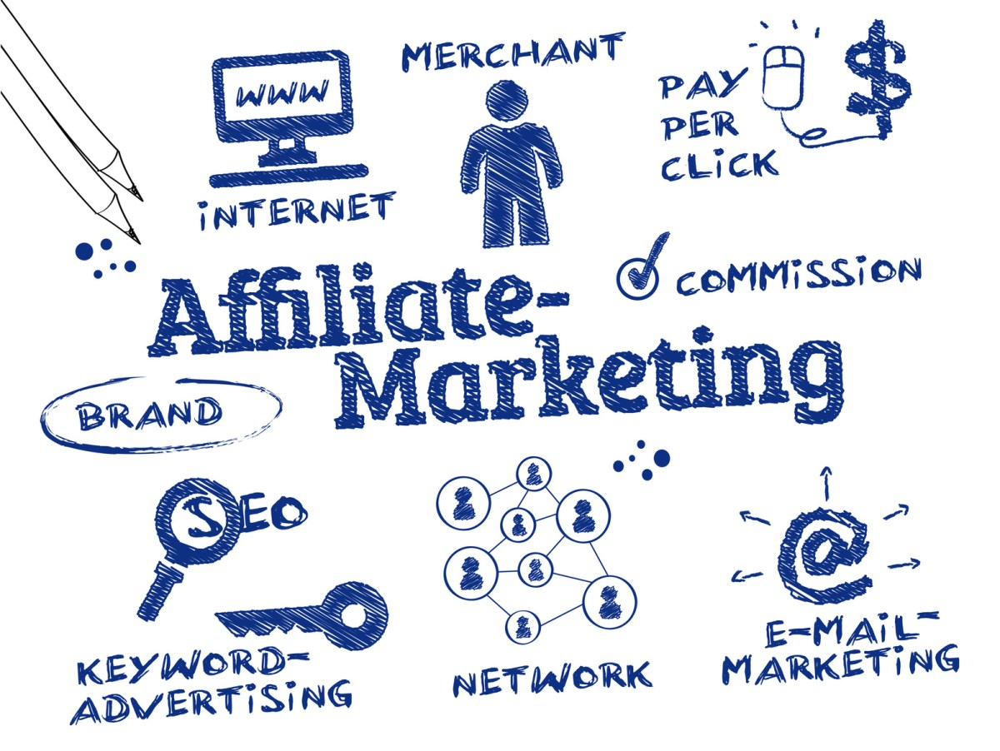

Guía sobre Marketing de Afiliados
Si has estado buscando la forma de emprender un negocio digital o ganar dinero por internet seguramente habrás escuchado sobre el marketing de afiliados, y la razón es que muchas personas están generando buen dinero desde sus casas gracias a este modelo de negocio.

De forma breve te explicaré en que consiste el marketing de afiliados, como funciona y como puedes empezar en pocos días un negocio digital con este sistema.
¿Qué es el marketing de afiliado?
El marketing de afiliados es básicamente una rama del marketing Digital que consiste en que una persona o “afiliado” puede promocionar los productos de un fabricante con ayuda de un link de referido y cobrar una comisión por cada venta que se haya registrado con ese enlace.
Este sistema de venta combinado con la herramienta tan poderosa que es internet, proporciona muchas más ventajas y un apalancamiento inmensamente mayor en comparación al comercio tradicional, tanto para los comerciantes como para los afiliados.
.jpg)
Por ejemplo, a el fabricante, productor, empresa, o como le queramos llamar, mejor aún “anunciante”, le resulta más eficaz y económico pagar por cada acción o venta que los clientes realicen al ver la publicidad de los afiliados, a diferencia de invertir en campañas publicitarias tradicionales cuya efectividad en más difícil de medir. Del mismo modo, para los afiliados es una buena forma de monetizar cualquier sitio web que tengan, ya sea un blog, página web, canal de YouTube e incluso sus redes sociales. Una de las ventajas este modelo de negocio digital, es que para iniciar no necesariamente debes contar con muchos seguidores. Puedes empezar desde cero y aun así empezar a ganar dinero desde tu primer mes e incluso desde la primera semana.
¿Cómo funciona?
Seguramente conocerás la empresa amazon, una de las plataformas más usadas a nivel mundial para comercio electrónico. Su programa de afiliados puede ayudarte a entender cómo funciona este negocio.
.png)
Primeramente es necesario contar con una plataforma digital donde se pueden exhibir los productos y proveer la tecnología necesaria que da soporte a los afiliados: links de referidos, herramientas de publicidad, pago de comisiones, etc. Para eso lo que hacemos es afiliarnos a una plataforma de comercio electrónico que implemente el marketing de afiliados.
.jpg)
Los afiliados comparten su link o enlace en lugares estratégicos de modo que las personas que les interese el producto puedan verlo y seguidamente comprarlo. Esto generará una ganancia inmediata para el afiliado que se verá reflejada en su saldo en la plataforma.
¿Cómo empezar un negocio digital con marketing de afiliado?
Algo que me gusta de este tipo de negocio en internet es que puedes aprender rápidamente replicando la estrategia de otros. Por eso recomiendo unirse a grupos o comunidades donde hayan personas que se dedican a esto. Así podrás empezar a generar dinero haciendo las mismas cosas que les da resultado a ellos.
Hay muchas plataformas gratuitas y diversos tipos de productos a los que te puedes afiliar para empezar ya tu emprendimiento. Por aquí abajo te dejaré más información gratuita de cuáles son los programas y estrategias que yo utilizo para generar mis ingresos. Espero y te pueda ser de utilidad también a ti.